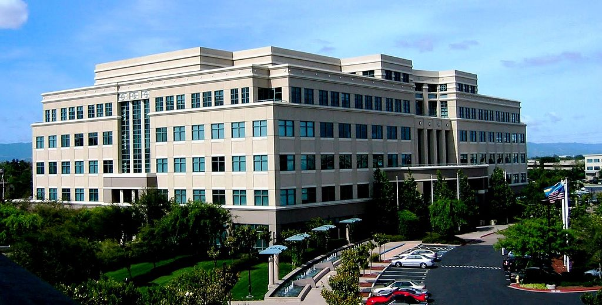
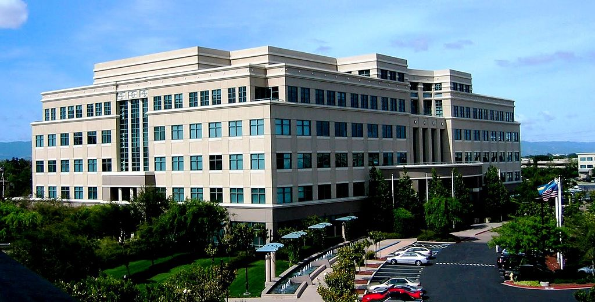

Cisco System Headquarters (Building 10), San Jose

ARPANET System Map from 1973

ARPANET's First Router

Computer Networks surround everyone, whether it be in home or at the office. One may log in to a client, have access to all of their files from the local server, send a document to the printer a few rooms over, all without moving from the desk. All of these actions were done through the location's computer network. The same also happens when he walks in the front door of his home. His phone connects to his home Wi-fi, asks his Amazon Alexa what plans he has for the night, and finishes up a file from work that is accessible through his works' server. Computer Networks connect everyone with everything through a series of devices that constantly communicate with each other and provide access to information from anywhere with an internet connection.
Techopedia defines "Computer Networking" as "an engineering discipline that aims to study and analyze the communication process among various computing devices or computer systems that are linked, or networked, together to exhchange information and share resources." Additionally, there are some other terms that correlate with computer systems. An Open Systemis a system which is connected to the network and is ready for communicaiton. On the other hand, a Closed System is not connected to the network and cannot be communicated with. With Networks come Network Devices that allow other devices to connect to a network, i.e. routers, switches, hubs, bridges, wireless routers, and wireless bridges.
With the vastness of computer systems, there has to be some form of management and standards in placec to keep everything runnign smoothly. The OSI, or Operation Systems Interconnection, is a reference model that specifies standards for communications protocols and also the functionalities of each layer. Protocols are a set of rules or algorithms which define the way how two entities can communicate across the network and there exists different protocol defined at each layer of OSI model, examples of protocals are TCP, IP, UDP, ARP, DHCP, FTP, etc.
But how exactly does information get from one place to another, say from Google's pool of information to a home computer? The Internet, which uses TCP/IP protocols, provides internet connection through an Internet Service Provider, or ISP. The ISP maintains the DNS cache, and will send and receive packets of information back and forth between itself and the router. The router will then send the information to a node, which has a unique IP address, that is connected to the router, like a phone, tablet, or home computer.
| Year | Event |
|---|---|
| 1961 | Leonard Kleinrock, in his paper titled "Information Flow in Large Communication Nets", proposes the idea of ARPANET, the earliest computer network |
| 1965 | Donald Davies coins the term "packet" |
| 1966 | Development of ARPANET begins, UCLA and SRI become the first 2 nodes, ARPANET is the first computer network to use packet switching |
| 1969 | The Internet is officially born |
| 1971 | The first email is sent by Ray Tomlinson |
| 1973 | Robert Metcalfe develops ethernet |
| 1973 | SATNET, the firs international network connection, launches |
| 1976 | The first true IP router is developed by Ginny Strazisar |
| 1981 | IPv4 is officially defined in RFC 791 |
| 1983 | Paul Mockapetris and Jon Pastel implement the first DNS |
| 1988 | Details abotu the first firewall are published |
| 1996 | IPv6 is introduced |
| 1997-2009 | Wi-Fi standards are developed and released; 1997 - 802.11, 1999 - 802.11a and 802.11b, 2003 - 802.11g, 2009 - 802.11n |
| 1999-2018 | Encryption protocols are introduced; 1999 - WEP, 2003 - WPA and WPA2, 2018 - WPA3 |
Cisco System Headquarters (Building 10), San Jose

ARPANET System Map from 1973
ARPANET's First Router